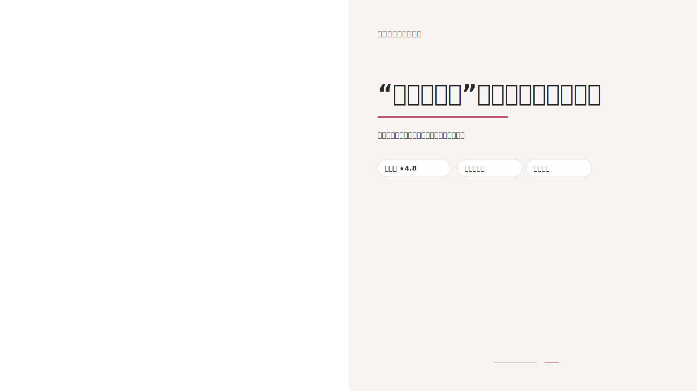
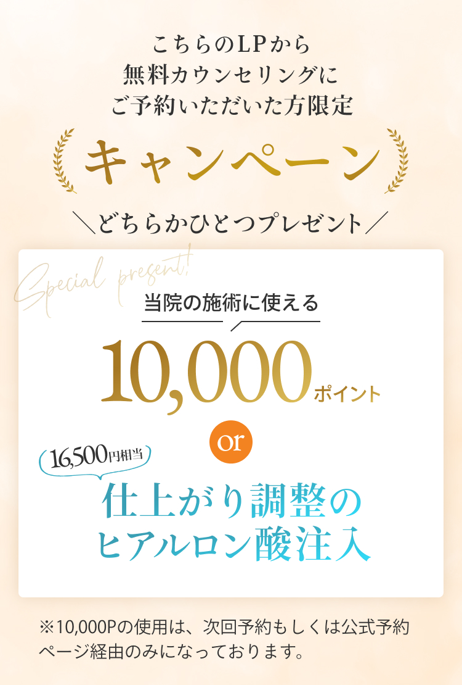
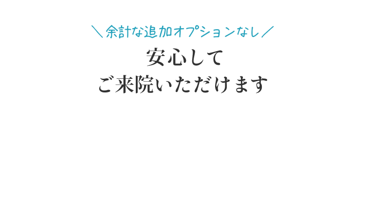
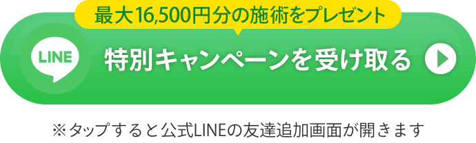
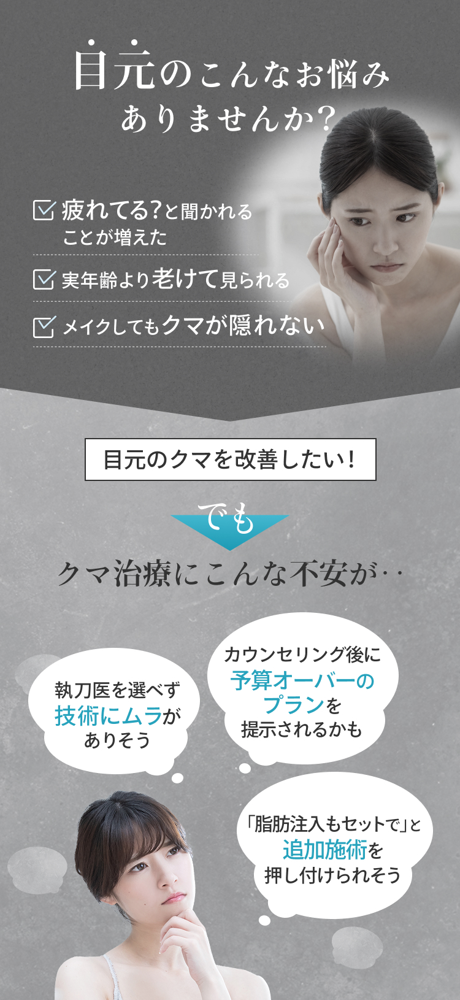
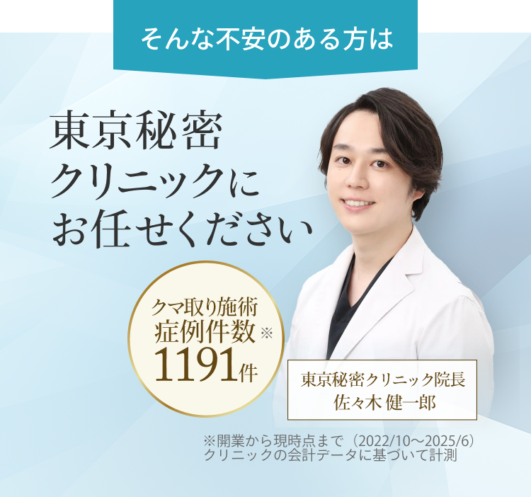
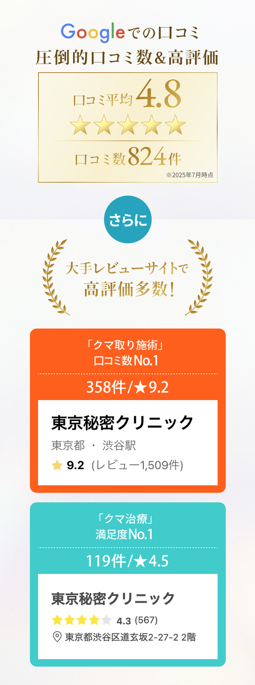
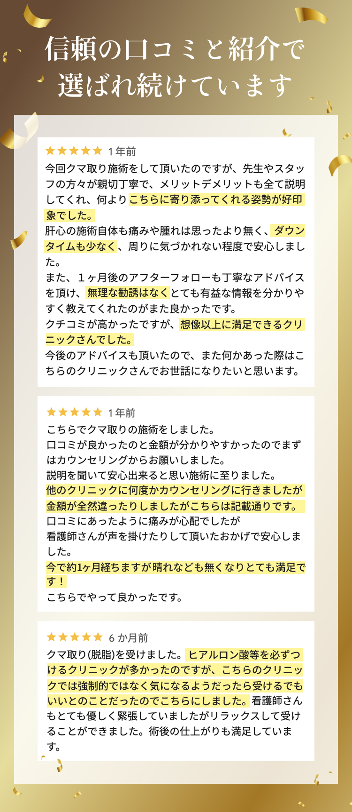
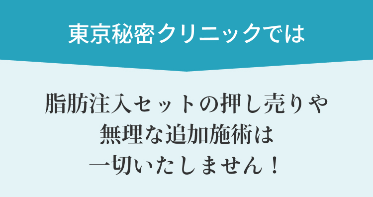
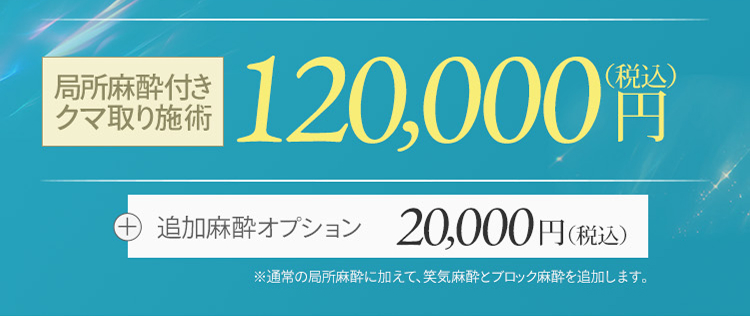
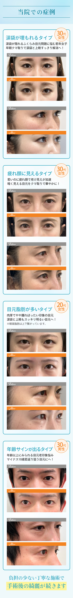
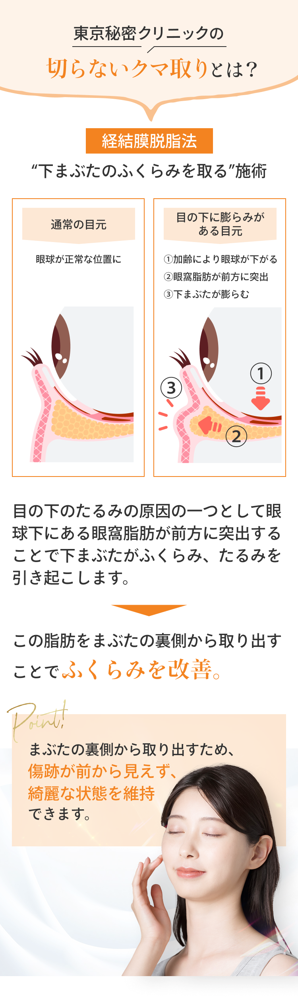
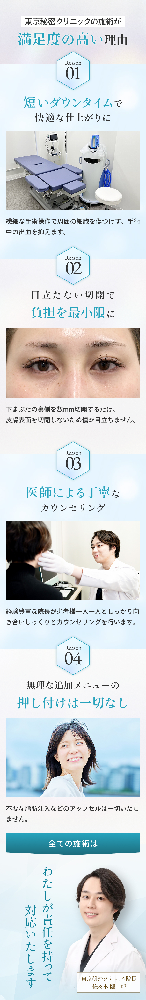
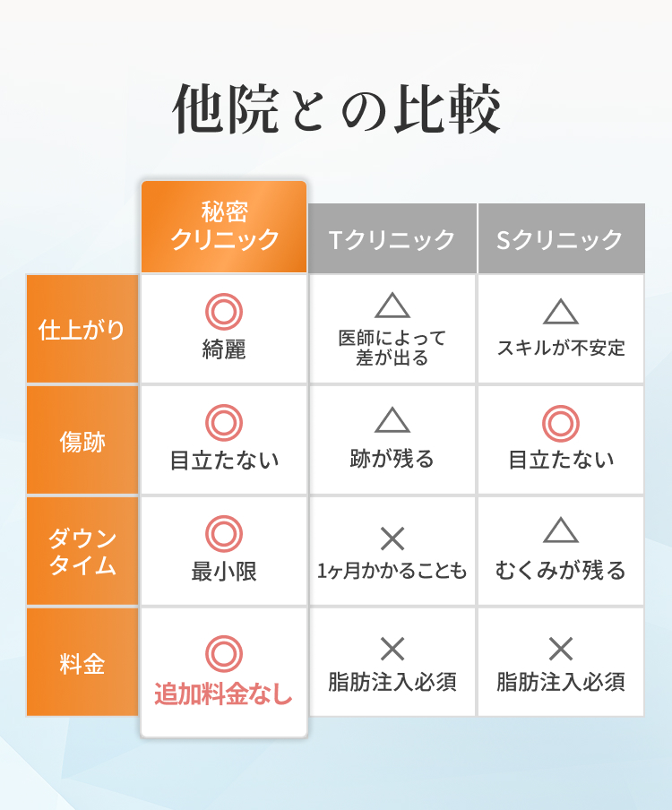
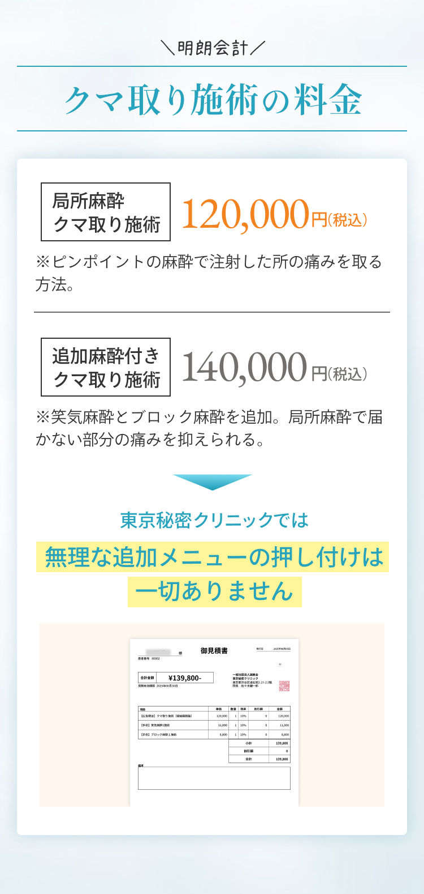
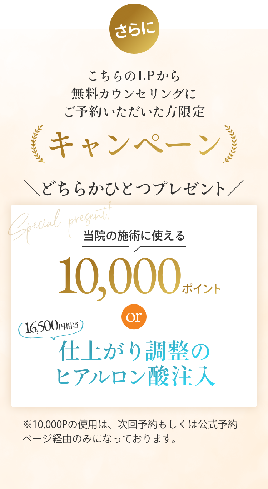
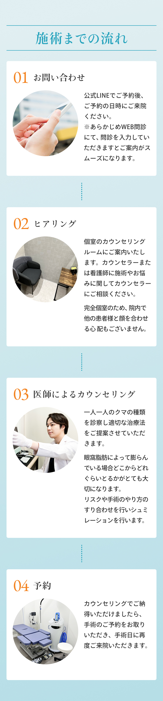
よくあるご質問
-
本当に表示価格です。今回は特別に「選べる特典」にヒアルロン酸も含まれているためクマ取り施術に必要な施術はすべてそろっています。
-
痛みはありますが、麻酔をしっかり使用していきますので我慢できないほどではありません。
笑気麻酔やブロック麻酔を併用することで、痛みは幅に緩和することは可能です。
施術ずっと痛いわけではなく、脂肪の袋を時に一時的に鈍い痛みを感じます。
痛みが予想される操作の前には、スタッフが声掛けをするので安心して施術を受けていただければと思います。 -
傷跡は見えません。瞼の裏側の粘膜を切開するため外からは傷跡は見えません。
また、粘膜部分を切開するため皮膚よりも傷の直りが早く傷跡が目立ちません。
当院は電気メスを使用するため、メス刃での切開と比較して傷口の治り方もきれいですし、癒着などのリスクも数ないです。 -
内出血が出なければ1週間程度です。
泣いた翌日のような目の重みやむくみ感が3日～5日続きますが、1週間たつ頃には落ち着いていきます。
内出血が出た場合は内出血が吸収されるまで2週間ほどかかる場合があります。 -
当日からメイクしていただけます。
ひりつきや赤み、かゆみがある場合は翌日まで様子見ていただくようお願いいたします。 -
カウンセリング当日に受けることは可能です。日帰り手術ですし、目の裏からなので傷が周りの方に見えることもありません。
-
大丈夫です。最近は男性の患者様も増えています。女性と違ってメイクでごまかせない分気にされている方は多いと思います。 クマ取り施術はきちんと取ってあげれば一生に1回で済む施術です。男女問わず皆さん「初めての施術」として受けています。
-
1週間後から使用が可能です。普段コンタクトレンズをご使用の方は眼鏡をご持参下さい。
-
手術後数日は内出血が出やすい状態にあるため最低でも3日できれば1週間は開けるようにしてください。 内出血や腫れなどダウンタイムが気になる方は飲酒、運動は数日はおすすめいたしません。
-
私自身クマを25歳の時点で取りました。その際あまり膨らんではいませんでしたが取ってスッキリしましたし、何よりいつ取ったとしても取れる量は変わりません。早めにとってたるみを防ぐことが大切です。
-
凹み感や脂肪がなくなったことによりできる小じわなどはヒアルロン酸で修正可能でございます。
-
直接目の形を左右するっ施術ではないため目の形の左右差やバランス調整はできません。
-
目袋の脂肪の多さは体系に必ずしも体系に関連することはないです。体系ではなく目元の印象で施術のタイミングを決めるといいでしょう。
-
目の下の脂肪を除去すると上瞼の脂肪が少し下瞼のに回りこみ目の上がスッキリとした印象になる方もいらっしゃいます。
-
骨格にくぼみやすい方の場合直後から凹み感が出ます。そういった方の場合はカウンセリング時に凹みのリスクをお伝えしヒアルロン酸注入などのご提案をさせていただきます。
-
クマ（眼窩脂肪）が将来的に突出してして皮膚のたるみが目立つようになる状態を一般的な「老化」とも言えます。 経結膜脱脂術はこの皮膚の伸びたるみを引き起こす脂肪を除去するため目の下の不要なたるみによる「老け感」を回避できます。 若いうちに取ってしまった方が皮膚が伸びたるむリスクを回避できます。
クリニックについて
- 【住所】
- 〒150 - 0043
東京都 渋谷区 道玄坂 2 - 27 - 2
トウワ道玄坂ビル 2F
- 【アクセス】
- 渋谷駅 A0出口より 徒歩3分
- 【 診療時間】
- 10：00 〜 19：00（不定休）
- 【 電話番号】
- 03 - 3780 - 0132
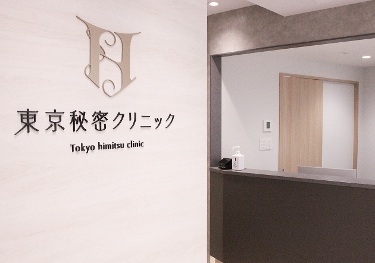